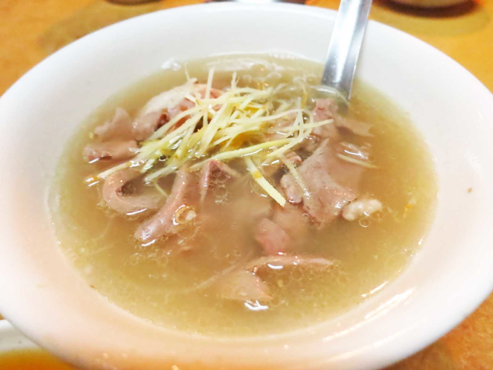

如果不排斥蒜的味道，不妨可以試試，因為它的味道不但不會過於刺激，反而非常的香

我們都認為魚的內臟是苦的，但是在這裡吃到的不但不會有苦的感覺，反而還帶點甘甜，值得一試

如果不考慮價錢的話，個人認為此家的魚皮湯也值得試試，通常大部分的湯喝完都會有口渴的感覺，不過這裡的湯並不會有這種感覺，反而還會有不腥的鮮味，最重要的還是他的魚皮沒有裹漿，薄薄的魚肉細嫩，皮肉間也沒有土腥味，值得試試

說實在的，第一次吃還真的不太敢吃，它的口感非常的軟嫩滑口，完全沒有腥味，再佐以淡淡的中藥香，更令人回味。而且吃起來還真的有一種在吃腦的奇妙感覺，不過如果撇掉這些感覺，其實個人覺得這個是非常值得嘗試的

其實我覺得豬骨髓的味道，就像是融合了濃厚大骨味的豆腐，好吃在於味道濃厚而無腥味，而且阿明豬心的豬骨髓湯還帶著淡淡黃耆的味道，錯過可惜

這裡的豬腳吃起來軟軟的，不過我覺得最厲害的是他們的醬油，稠稠的帶有甘甜的感覺，但唯一的缺點是他的蒜頭味道沒有融入醬油，兩個完全是分開的，所以建議還是搭配豬腳一起吃，如此才有「蒜頭豬腳」的感覺


他們的湯頭味道還不錯，但湯不是重點，重點就是在他們的豬心，他們的豬心是現點現切現煮的，豬心的口感非常份量真的很少~
我覺得他們的米糕，雖然看似普通平凡，但是吃起來的口感是非常有古早味的感覺，外面賣的有時候都會標「古早味米糕」，但實際上吃起來跟古早味還有一段很大的差距。而且這家的米糕雖然看起來很小，但是吃起來卻很有飽足感，來台南玩不吃可惜
這家店可以吃的東西非常多，但我覺得一定要吃到的是砂鍋魚頭，砂鍋魚頭主要是先把魚炸過再放入自家所「調配的」白菜滷湯，但是外面大部分的砂鍋魚頭都到最後變得爛爛的，唯獨此家的砂鍋魚頭無論放多久都不失其特色(放過頭除外)，不過最大的缺陷是價格太高，但是我覺得值得一試
「螺肉蒜」這種東西在市面上其實就有賣，但是吃起來並不怎麼好吃，有種奇怪的味道，而且價格也不便宜，可是在這裡他雖然多加了魷魚，不但沒有魷魚的腥味反而還會回甘，而且經過稍微的估算，價格也不高，因此時常吃不到，所以想嘗試的話一定得必須盡早前往

他們的蚵酥非常的特別，吃起來外酥內軟，不帶半點腥味，比起其他地方真的差很多，要不是蚵仔太乾，不然就是腥味很重，再不然就是吃蚵酥好樣在吃炸粉一樣，差距真的很大，不過最大的問題還是在於價錢，這道料理的價位通常都不低，吃時還得多多考慮
麻油豬心個人建議最好配飯吃，因為如果單吃，到最後會有點油膩，不過最大的優點即是它非常的入味，不吃可惜
個人認為此道料理配飯，絕佳。但是價格不一定，或許是因為季節關係

此道料理也是以配飯為主，不但好下飯，而且可能讓食量小的人想要吃更多，想補足營養的人，可以以此道料理為主軸

想了解更多台南美食，請洽台南人或電免付費電話7087-184-488(請你放心-一輩子-吃飽飽)